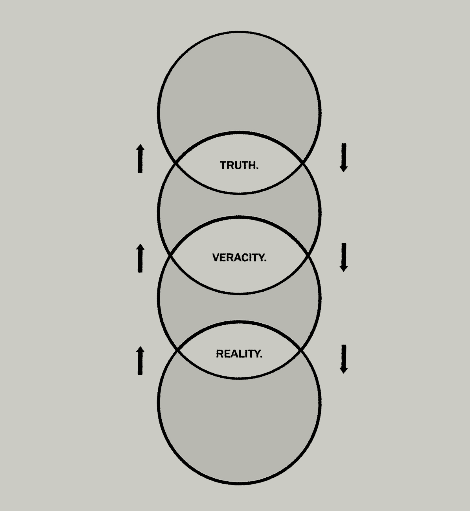

About N.O.V.E.L
Science in service of Material Change
Grounded in the thoughts of Duarte and Rosseauline Levine, NAP is an academic research laboratory open to all curious minds. The N.O.V.E.L groupe and affiliated entities is dedicated to the advancement of humanity through a principled adherence to the tenets of Truth, Veracity, and Reality.
Inspired by Mixolydian technology, of the Cenozoic to date, we aspire to answer the difficult questions surrounding physical interaction of non-material objects and references.
“Only through comprehension of our environment, can we hope to direct and transform it.” - Geoffroy Lynne
This critical work would not be possible without strong support from ACR, IMPT, and NCAAs.